指ダンスは、カメラに映った手の形と人差し指の向きに合わせて、ロボットを走らせたり踊らせたりするシステムである。表 1-1 は、操作に使う機器である。ロボットは Raspberry Pi Mouse V3 であり、名前は chibamouse1 である。この手順書では、Mac Studio を「Mac」、Raspberry Pi Mouse を「ロボット」、Mac とロボットをつなぐ Wi-Fi ルータ <研究用ルータのSSID> を「研究用ルータ」と呼ぶ。図 1-1 は、機器のつながりを示したものである。
| 機器 | 写真・名前 | 操作で使うところ |
|---|---|---|
| ロボット | 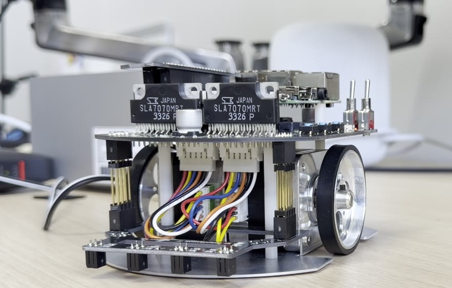 | 電源スイッチ、モータ用の電源スイッチ |
| Mac | Mac Studio と Studio Display | Chrome、ターミナル。カメラは Studio Display の上に付いている |
| 研究用ルータ | <研究用ルータのSSID> | 電源を入れておく。設定は変えない |
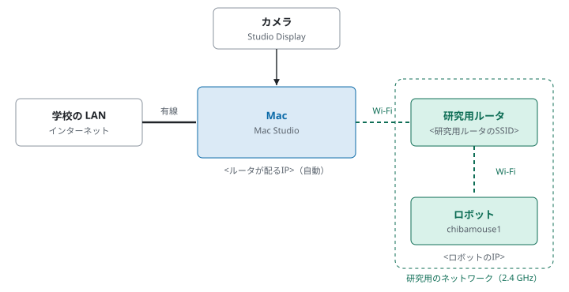
操作では、表 1-2 の 5 つの画面を使う。Mac の中では、ROS 2 を動かすための Docker のコンテナ finger_dance が動いており、この手順書ではこれを「コンテナ」と呼ぶ。コンテナの画面は、Chrome で開く「デスクトップ画面」に表示され、コマンドはその中の Terminator という端末で入力する。
| 画面 | 開き方 | 使い方 |
|---|---|---|
| ターミナル | Mac のアプリ「ターミナル」 | ロボットにログインして、ロボットのノードを起動する |
| デスクトップ画面 | Chrome で http://localhost:6081 | コンテナの画面。Terminator と検出画面がここに出る |
| Terminator | デスクトップ画面の Terminator のアイコン | コンテナでコマンドを入力する |
| カメラページ | Chrome で http://localhost:6081/camera.html?port=9091 | カメラの映像をコンテナに送る |
| 検出画面 | 指ダンスを起動すると、デスクトップ画面に開く | 検出した手の点と、手の形の判定を確かめる |
図 2-1 は、ロボットの電源を入れてから終了するまでの流れである。緑の手順はロボットでの作業、青の手順は Mac での作業である。それぞれの手順の下に、説明している節を書いた。初めて使う Mac では、先に 8 章の準備を行う。
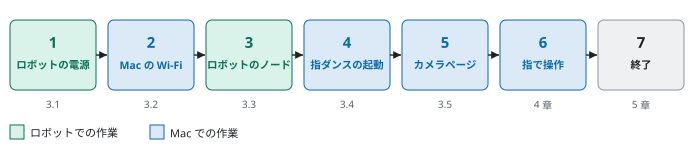
ロボットを机の上に置くときは、車輪が浮くように台の上に載せ、走り出しても落ちないようにする。ロボットの電源スイッチを入れると、約 43 秒で起動が終わる。続けて、モータ用の電源スイッチを入れる。モータ用の電源スイッチが切れていると、指令を送っても車輪は回らない。
Mac のメニューバーの Wi-Fi のマークを押し、一覧から <研究用ルータのSSID> を選ぶ。インターネットは有線の LAN から使えるので、Wi-Fi を切り替えてもインターネットは使える。研究室用ルータに自動でつながると、操作の途中でロボットとの通信が切れるので、8.3 節の設定をしておく。
Mac のターミナルで、ロボットにログインする。
ssh -i ~/.ssh/pimouse_ed25519 ubuntu@<ロボットのIP>
プロンプトが ubuntu@chibamouse1:~$ になれば、ロボットにログインできている。続けて、ロボットのモータと光センサを扱う raspimouse ノードを起動する。
ros2 launch raspimouse raspimouse.launch.py
最後に次の表示が出れば起動できている。このターミナルは、終了するまで閉じない。
[raspimouse-1] [INFO] [raspimouse]: Raspimouse node activated
Chrome で http://localhost:6081 を開く。図 3-1 の「接続」を押すと、デスクトップ画面が出る。黒い画面に模様が動いているときはスクリーンセーバーなので、マウスを動かす。図 3-2 の赤い枠の Terminator のアイコンをダブルクリックして、Terminator を開く。Terminator の最初の行に次の表示が出ていれば、コンテナはロボットにつながる設定になっている。
[実機モード] 接続先: <ロボットのIP> ROS_DOMAIN_ID: 30 （シミュレーションに戻すには robot_disconnect）
この表示が出ていないときは、次のコマンドを 1 回実行し、Terminator を閉じて開き直す。
robot_connect <ロボットのIP>
Terminator で、指ダンスを起動する。
source ~/ros2_ws/install/setup.bash ros2 launch finger_dance finger_dance.launch.py
次の 2 行が出れば、起動できている。起動すると、ロボットのモータの電源が自動で入る。同時に、デスクトップ画面に検出画面が開く。
[finger_dance]: 送り先 /cmd_vel（TwistStamped）、前後 最大 0.05 m/s、旋回 最大 1.0 rad/s
[rosbridge_websocket]: Rosbridge WebSocket server started on port 9091
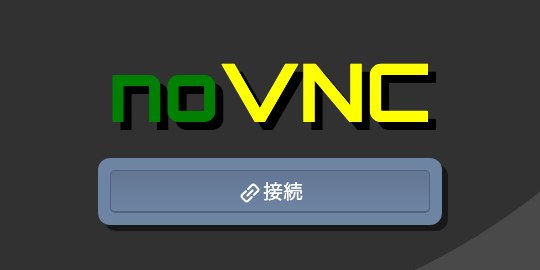
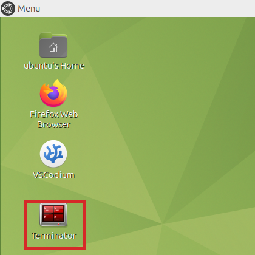
Chrome の新しいタブで http://localhost:6081/camera.html?port=9091 を開く。図 3-3 は、このカメラページの画面である。カメラは「Studio Display のカメラ」、解像度は 640×480、フレームレートは 10 fps を選び、「開始」を押す。初めて開いたときは、カメラの使用を許可するかを聞かれるので、「許可」を押す。
映像が出て、画面の下の「送信した枚数」が増えていけば、映像がコンテナに届いている。デスクトップ画面に戻ると、検出画面にカメラの映像が出る。図 3-4 は、人差し指を本人から見て左に 31° 傾けたときの検出画面である。検出した手には緑の点が付き、人差し指のときは指の向きに緑の矢印が出る。左上には手の形の判定が出て、人差し指のときは指の向きの角度も出る。検出画面はカメラの映像をそのまま映すので、本人から見て左に傾けた指は、画面では右に傾いて写る。
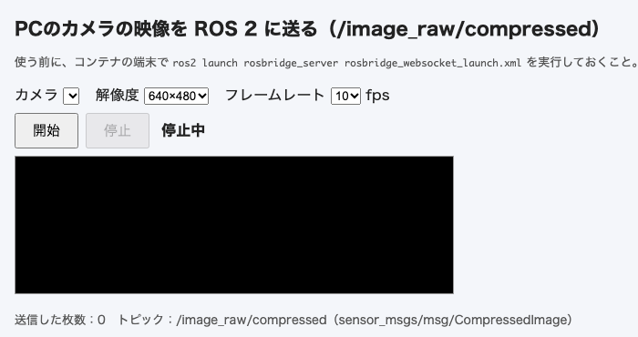
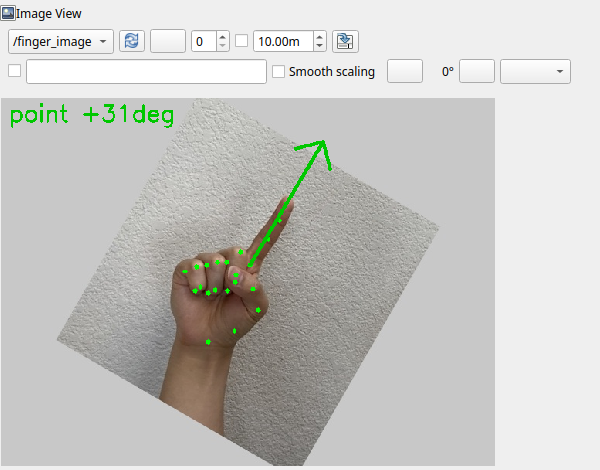
カメラから 50 cm〜1 m ほど離れ、手首まで画面に入るようにする。手のひらをカメラに向け、操作する手だけを画面に入れる。もう一方の手が映っていると、そちらの手を検出して、操作する手を見ないことがある。
表 4-1 は、手の形とロボットの動きの対応である。この章の写真は、本人が鏡で自分の手を見たときの向きにしてある。中指・薬指・小指はしっかり握り込む。半分だけ曲げると「その他の形」と判定されて、ロボットは止まる。親指はどの手の形でも、立てても握ってもよい。
| 手の形 | 写真 | 検出画面の表示 | ロボットの動き |
|---|---|---|---|
| 人差し指 | 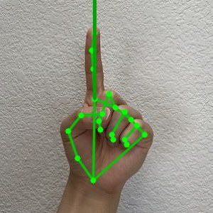 | point と角度 | 指の向きに合わせて走る（4.3 節） |
| チョキ | 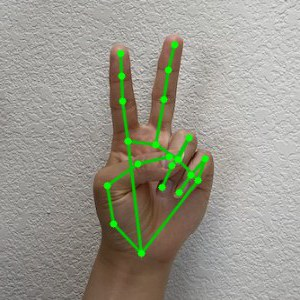 | peace | その場で左右に小刻みに振る。これを「踊り」と呼ぶ |
| グー | 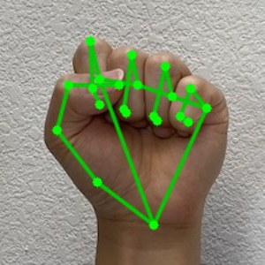 | fist | 止まる |
| パー | — | open | 止まる |
| 手を下ろす | — | none | 止まる |
人差し指を立てたときは、指を時計の針のように回して操作する。指だけを曲げるのではなく、手首から手全体を回して、指の付け根から指先までの線を傾ける。表 4-2 は、指の向きとロボットの動きの対応であり、左右は本人から見た向きである。検出画面の角度は、本人から見て左がプラス、右がマイナスになる。
図 4-1 は、すべての向きとロボットの動きの関係をまとめたものである。図の θ は指の向きの角度、v は前後の速さ、ω は旋回の速さである。真上と真下から 10° 以内では曲がらず、真横から 20° 以内では前後に進まないので、少し大きめに傾けると分かりやすい。
| 写真 | 指の向き | 検出画面 | ロボットの動き |
|---|---|---|---|
| 真上 | +0deg | まっすぐ前進する（0.05 m/s） | |
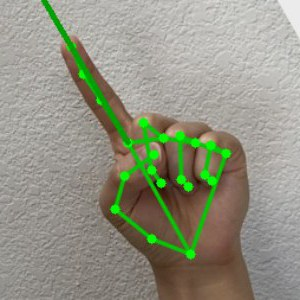 | 少し左に傾ける | +30deg | 前進しながら左に曲がる |
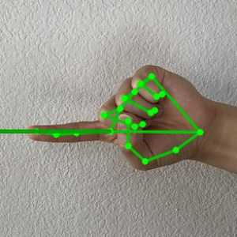 | 真横の左 | +90deg | その場で左に回る（1.0 rad/s） |
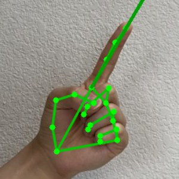 | 少し右に傾ける | -30deg | 前進しながら右に曲がる |
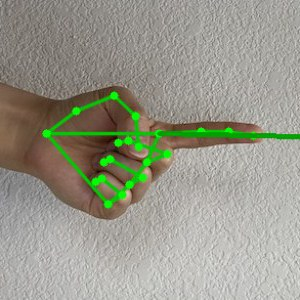 | 真横の右 | -90deg | その場で右に回る |
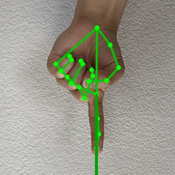 | 真下 | +180deg | まっすぐ後退する |
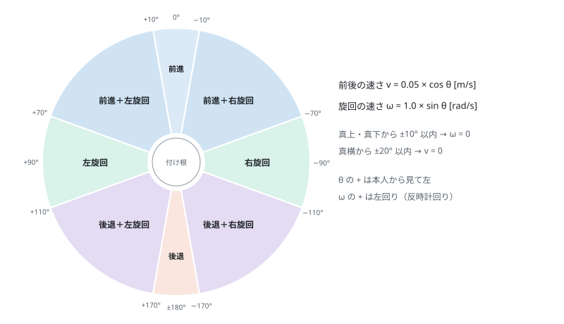
手の形を変えたら、1 秒ほどそのまま止める。ロボットが走り出すのは、同じ手の形を 2 回続けて検出したときであり、手の形がすぐに変わると走り出さない。止まるほうは、グー・パー・手を下ろすのどれでも、すぐに止まる。指はカメラのほうに向けず、画面と平行に向ける。指をカメラに向けると、画像の上で指が短く見えて、曲げていると判定されることがある。検出画面の判定が other になるときは、中指・薬指・小指の握りが甘いことが多い。
次の順で終了する。
sudo poweroff
ロボットの Raspberry Pi 3 は、sudo reboot で再起動すると起動しなくなる。再起動するときは、sudo poweroff で止めてから電源スイッチを切り、もう一度入れる。
ロボットを使わずに、画面の中の亀（turtlesim）で指ダンスを確かめられる。ロボットの電源、Wi-Fi の切り替え、ロボットのノードの起動は要らない。3.4 節の手順で Terminator を開き、次のコマンドで起動する。
source ~/ros2_ws/install/setup.bash ros2 launch finger_dance finger_dance.launch.py turtlesim:=true
デスクトップ画面に、亀の画面と検出画面が開く。3.5 節の手順でカメラの映像を送ると、4 章の操作で亀が動く。亀はロボットより速く動くように、前後の速さの最大値を 1.0、旋回の速さの最大値を 1.5 にしている。亀が画面の端に着いたときは、別の Terminator で次のコマンドを実行すると、亀が中央に戻る。
ros2 service call /reset std_srvs/srv/Empty
iPhone で撮ったロボットの動画と、検出画面の動画を、時刻を合わせて左右に並べた 1 本の動画にできる。検出画面は記録しておかないと残らないので、撮影を始める前に記録を始める。
3 章の手順で指ダンスを起動してから、デスクトップ画面で新しい Terminator を開き、記録を始める。記録は研究フォルダの ros2_ws/bags/ に、日付と時刻の名前で残る。
ros2 bag record -o ~/ros2_ws/bags/dance_$(date +%Y%m%d_%H%M%S) /finger_image/compressed /finger_gesture /cmd_vel
記録を始めたら、iPhone でロボットを撮りながら、指で操作する。撮り終わったら、記録の Terminator で Ctrl + C を押す。
同じ Terminator で、記録を MP4 の動画にする。dance_20261026_112114 の部分は、7.1 節で作られたフォルダの名前に置き換える。
python3 ~/ros2_ws/tools/bag_to_mp4.py ~/ros2_ws/bags/dance_20261026_112114
ros2_ws/bags/ に、dance_20261026_112114_finger.mp4 ができる。この動画の下には、その時刻と、ロボットに送った速度の指令が出る。
iPhone の動画を AirDrop などで Mac に送り、研究フォルダ chibariyo-dance-mimic に入れる。Mac のターミナルで次を実行する。IMG_1235.MOV は iPhone の動画の名前に、最後のファイル名は 7.2 節でできた動画の名前に置き換える。
cd chibariyo-dance-mimic tools/combine.sh IMG_1235.MOV ros2_ws/bags/dance_20261026_112114_finger.mp4
研究フォルダに、左がロボット、右が検出画面の IMG_1235_combined.mp4 ができる。時刻は iPhone の撮影を始めた時刻で合わせる。2 つの動画が 0.5 秒ずれて見えるときは、ファイル名の後ろに補正の秒数を付けて実行し直す。検出画面が遅れて見えるときはプラス、早く見えるときはマイナスにする。
tools/combine.sh IMG_1235.MOV ros2_ws/bags/dance_20261026_112114_finger.mp4 0.5
動画の一部だけを切り出すときは、次のように始まり（-ss）と長さ（-t）を秒で指定する。この例は、30 秒から 18 秒間を切り出す。
ffmpeg -ss 30 -i IMG_1235_combined.mp4 -t 18 -c:v libx264 -crf 23 -c:a aac IMG_1235_part.mp4
Mac に Docker Desktop を入れて起動し、ターミナルで次を実行する。コンテナのイメージを作り、コンテナ finger_dance を起動する。ダウンロードにインターネットが要り、初回は数分かかる。
cd chibariyo-dance-mimic/docker docker compose up -d --build
Mac を起動し直した後などでコンテナが止まっているときは、同じフォルダで docker compose up -d を実行すると、コンテナが起動する。
Chrome で http://localhost:6081 を開き、Terminator で次を実行する。プログラムのファイルを書き換えたときは、ビルドし直さなくてよい。ファイルを足したときや setup.py を変えたときは、ビルドし直す。
cd ~/ros2_ws && colcon build --symlink-install
続けて、コンテナがロボットにつながるよう設定する。
robot_connect <ロボットのIP>
Mac の「システム設定」→「Wi-Fi」で、研究室用ルータの右の「…」を押し、「自動接続」を切る。このようにすることで、操作の途中で Mac が研究室用ルータにつなぎ直して、ロボットとの通信が切れることを防げる。
ロボットの SD カードを作り直すときは、研究フォルダの chibamouse/作り方.md の手順で行う。
表 9-1 は、よく起きることと、その確かめ方である。
| 起きること | 確かめること |
|---|---|
| ロボットにログインできない | Mac の Wi-Fi が <研究用ルータのSSID> になっているか。ロボットの電源を入れてから 43 秒以上たっているか |
http://localhost:6081 が開かない | コンテナが止まっている。8.1 節の docker compose up -d を実行する |
| カメラページの「送信した枚数」が増えない | 指ダンスを起動しているか（3.4 節）。アドレスの最後に ?port=9091 を付けたか。カメラの使用を許可したか |
| 検出画面に何も出ない | カメラページで「開始」を押したか。検出画面の左上のトピックが /finger_image になっているか |
手が映っているのに none のまま | 手首まで画面に入っているか。手が画面の端で切れていないか。部屋が暗くないか |
人差し指なのに other や peace になる | 中指・薬指・小指を深く握り込む。指をカメラに向けず、画面と平行に向ける |
| 判定は合っているのにロボットが動かない | モータ用の電源スイッチ。ロボットのノードが動いているか（3.3 節）。Terminator の 1 行目に [実機モード] が出ているか |
| 操作の途中でロボットが反応しなくなった | Mac の Wi-Fi が研究室用ルータに切り替わっていないか（8.3 節）。ロボットの電池が減っていないか |
| 左右が逆に感じる | 起動するときに mirror:=true を付ける。左右の向きが入れ替わる |
| ロボットが起動しない（赤の LED だけ点く） | sudo reboot をした後は起動しない。電源スイッチを切って、もう一度入れる |